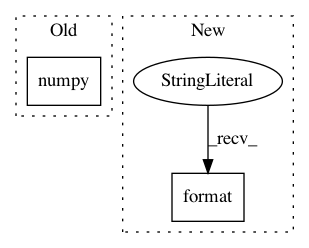

1348192ebae2ad12629ba0158ee0a160af166b89,src/generate_disguised_fooling_samples.py,DisguisedFoolingSampleGeneration,generate,#DisguisedFoolingSampleGeneration#,32
Before Change
break
// Target specific class
class_loss = -output[0, self.target_class]
print("Iteration:", str(i), "Loss", "{0:.2f}".format(class_loss.data.numpy()[0]))
// Zero grads
self.model.zero_grad()
// Backward
After Change
break
// Target specific class
class_loss = -output[0, self.target_class]
print("Iteration:", str(i), "Target confidence", "{0:.5f}".format(target_confidence))
// Zero grads
self.model.zero_grad()
// Backward
In pattern: SUPERPATTERN
Frequency: 5
Non-data size: 2
Instances
Project Name: utkuozbulak/pytorch-cnn-visualizations
Commit Name: 1348192ebae2ad12629ba0158ee0a160af166b89
Time: 2017-12-12
Author: utku.ozbulak@gmail.com
File Name: src/generate_disguised_fooling_samples.py
Class Name: DisguisedFoolingSampleGeneration
Method Name: generate
Project Name: nerox8664/pytorch2keras
Commit Name: 49dc427e2c196a334dc7b173ff317e05f04813e7
Time: 2018-01-29
Author: nerox8664@gmail.com
File Name: pytorch2keras/layers.py
Class Name:
Method Name: convert_batchnorm
Project Name: ClementPinard/FlowNetPytorch
Commit Name: c6a079c70368b41873f3288b05b74d38f74b6680
Time: 2018-03-30
Author: clement.pinard@parrot.com
File Name: run_inference.py
Class Name:
Method Name: main
Project Name: tensorflow/models
Commit Name: bc324fda2866eab986a604b19272137f9006a603
Time: 2021-02-10
Author: arashwan@google.com
File Name: official/vision/beta/tasks/semantic_segmentation.py
Class Name: SemanticSegmentationTask
Method Name: reduce_aggregated_logs
Project Name: utkuozbulak/pytorch-cnn-visualizations
Commit Name: 1348192ebae2ad12629ba0158ee0a160af166b89
Time: 2017-12-12
Author: utku.ozbulak@gmail.com
File Name: src/generate_fooling_samples.py
Class Name: FoolingSampleGeneration
Method Name: generate